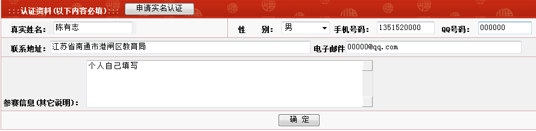

实名认证已经启动
首页
站务管理
#1 实名认证已经启动 作者：有志青年 发表时间：2011-8-13 14:21:45
控制面板，修改个人信息中，填写真实姓名、性别、联系电话、联系地址、以往参赛信息或相关信息、qq号码。
以上信息填写后仅管理员后台可见。

1、先填写个人认证的相关信息
2、点击下方的“确认”按钮
3、再次进入，点击“申请实名认证”按钮
4、等待管理员后台审核
［ 掌棋宣传员 于 2011-8-13 14:23:53 时花20金币送鲜花一朵］
［ 小红眼镜 于 2011-8-13 14:25:58 时花20金币送鲜花一朵］
［此帖子已被 有志青年 在 2011-8-13 17:29:18 编辑过］
［ 岑小鱼 于 2011-8-13 17:38:15 时花20金币送鲜花一朵］
#2 Re:实名认证已经启动 作者：掌棋宣传员 发表时间：2011-8-13 14:25:31

#3 Re:实名认证已经启动 作者：小红眼镜 发表时间：2011-8-13 14:33:15
 支持一个~
支持一个~
#4 Re:实名认证已经启动 作者：岑小鱼 发表时间：2011-8-13 17:22:45
为何我的申请还没通过.......
早上就申请了
刚再写了一次。。。
#5 Re:实名认证已经启动 作者：有志青年 发表时间：2011-8-13 17:24:23
后台未见你提交认证，请进入控制面板，修改个人资料中，确认认证
#6 Re:Re:实名认证已经启动 作者：岑小鱼 发表时间：2011-8-13 17:32:31
引用：
原文由 有志青年 发表于 2011-8-13 17:24:23 :
后台未见你提交认证，请进入控制面板，修改个人资料中，确认认证
不会吧。。这么邪门...
开始见到屏蔽的名字上面有个砖石...我还想悄悄的也弄一个的...结果落最后了...
#7 Re:实名认证已经启动 作者：岑小鱼 发表时间：2011-8-13 17:37:39
终于好了  话说..我从一开始申请这个id就写了真名的..
话说..我从一开始申请这个id就写了真名的..
#8 Re:实名认证已经启动 作者：魔铃 发表时间：2011-8-13 23:59:18
现在只想修改下电子邮件 可是保存不上
楼上的名字就是小鱼吗
#9 Re:实名认证已经启动 作者：岑小鱼 发表时间：2011-8-14 13:34:01
小鱼是昵称....只是说资料里本身就写了真名.
#10 Re:实名认证已经启动 作者：掌棋如烟 发表时间：2011-8-14 15:13:30
实名了有啥好处米...
#11 Re:实名认证已经启动 作者：隔世的风 发表时间：2011-8-14 18:57:19
这个制度的推行实在是好！人就是要分出三六九等的嘛。
按这个进度发展下去，以后这个网站就变成世界排名前30人的交流场地了。这样好！清静
不够准确，所以修改一下：应当是有60人出入这个网站。30名实战棋手 + 30名管理员
［此帖子已被 隔世的风 在 2011-8-14 19:04:19 编辑过］
［ 有志青年 于 2011-8-15 11:59:10 时惩罚此帖，发帖者[金币减100 威望减1］
#12 Re:实名认证已经启动 作者：三国老凯 发表时间：2011-8-14 19:16:12
 貌似 谁都可以实名认证。。。
貌似 谁都可以实名认证。。。
再说不想让人知道自己的隐私你也可以不认证。。。。。
为什么想那么多呢？
#13 Re:实名认证已经启动 作者：隔世的风 发表时间：2011-8-14 19:16:25
建议世界实战排名30以下的人禁止登陆［ 有志青年 于 2011-8-15 11:59:14 时惩罚此帖，发帖者[金币减100 威望减1］
#14 Re:实名认证已经启动 作者：岑小鱼 发表时间：2011-8-14 19:25:04
看到另外一个文章，，才晓得我没资格申请的。。。请管理者把我的撤销吧..
#15 Re:Re:实名认证已经启动 作者：蓝天蓝 发表时间：2011-8-14 21:47:49
引用：
原文由 岑小鱼 发表于 2011-8-14 19:25:04 :
看到另外一个文章，，才晓得我没资格申请的。。。请管理者把我的撤销吧..
实名认证还有要求？哪里写了
#16 Re:实名认证已经启动 作者：自来水 发表时间：2011-8-14 22:42:52
 认证了有什么好处啊
认证了有什么好处啊
#17 Re:实名认证已经启动 作者：隐藏菜系 发表时间：2011-8-14 23:04:52
要求参加过省市级以上的比赛才可以哦~这是网站在鼓励大家走出虚拟网络走向实战…哈哈哈，好似儿好似儿
#18 Re:实名认证已经启动 作者：黄药师 发表时间：2011-8-14 23:06:46
填上相应的真实信息就可以了
#19 Re:实名认证已经启动 作者：五子酷 发表时间：2011-8-15 9:32:43
有啥好处？没好处我还是喜欢神秘一些
#20 Re:实名认证已经启动 作者：dyccj 发表时间：2011-8-27 9:32:56
能把九月的工资提前两天发吗，没钱竞猜了。